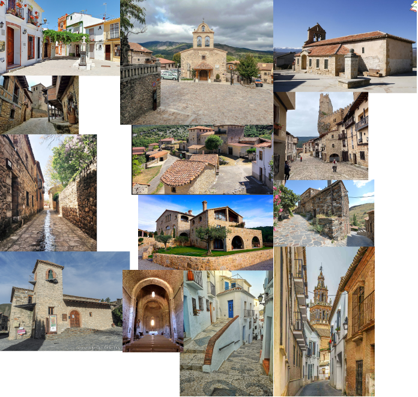
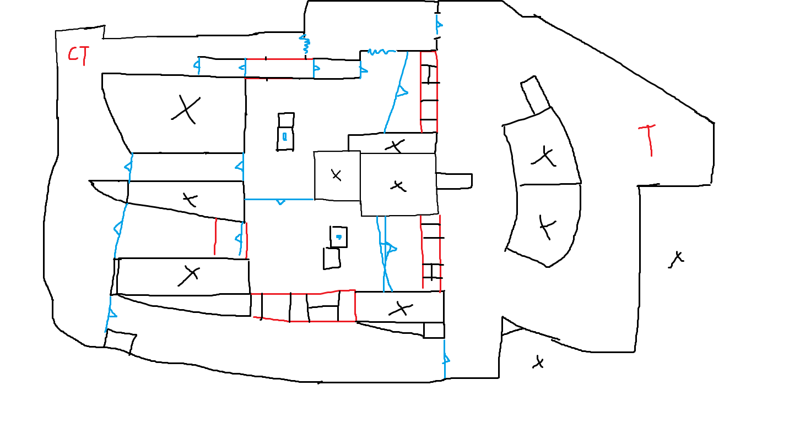

Sunstone
Article created in 14/03/2026 - Last update 14/03/2026
video here
Sunstone or gg_sunstone was a map I made for CS:GO in June 2021 as 1.5 hour Speedmapping challenge.
It was inspired by Baxayaun (Enrique Colinet), who was doing the same type of challenge while streaming it on his Twitch.
I recorded all the process and uploaded to youtube.
youtube video here
I used the same structure has Baxa
SPEEDMAPPING Challenge #01:
THEME > Rural
SIZE > Small
MODE > Gun Game / Elimination
TIME > 1h 30m
(time only counts when building the playable area)
With only one hour and a half I had to take priorities, which ment making sacrifies (very dramatic). Is more on the lines of: only geometry don't use any models, only use dev or simple textures, focus on big and medium, etc.
With that in mind I started the challenge.
The timer start only when making the map, so I took the liberty to use 15 minutes before the real timer to gather references. Since I'm from Spain and lived in rural towns, thought of doing a spanish rural town, fits perfectly.

Now the real timer starts.
1:30:00
Opened paint and started sketching the layout of the map while looking a the references, taking all Counter Strike principles into action. The mode is elimination, so no bomb sites, this type of maps works well for deathmatch and gun game. So I focus on variation in every route that can be taken. The middle ground is a place where you go when you don't know where to move, so I place the main landmark there, like in every spanish town I chose a church.

1:05:00
With an hour in hand I started Hammer, ready to lay down everything. Started with a base the ground using a dev texture of blabla